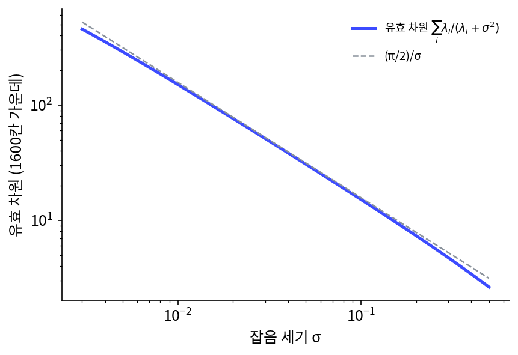
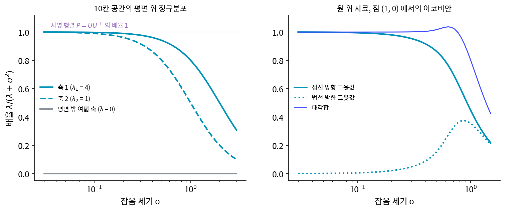

사영 행렬: 평평한 자료에서 디노이저는 주성분 분석과 만난다
원 위의 자료에서 가장 좋은 디노이저는 잡음이 작을 때 법선 성분만 지웠다. 그런데 원은 굽어 있어서, 「어느 방향이 법선인가」가 점마다 달랐다. 자료가 사는 곳이 평평한 면이라면 법선 방향은 어디서나 같다. 주성분 분석은 깨끗한 자료를 보고 그 면의 축을 찾아 주었다. 디노이저는 깨끗한 자료와 잡음 낀 자료의 쌍만 보고 제곱 오차를 줄일 뿐이다. 그렇게 배운 디노이저도 주성분 분석과 같은 면을 찾아낼까? 찾아낸다면 디노이저 안 어디에 그 면이 적혀 있을까?
역사: 잡음 제거 신경망의 속을 선형대수로 들여다보기
2019년 뉴욕 대학의 모한(Sreyas Mohan)·카드코다이(Zahra Kadkhodaie)·시몬첼리(Eero P. Simoncelli)·페르난데스-그란다(Carlos Fernandez-Granda)는 그림 잡음 제거 신경망을 들여다보다 한 가지 약점을 보았다. 당시 뛰어나다고 꼽히던 신경망(2017년에 나온 합성곱 디노이저 DnCNN 등)은 학습할 때 본 잡음 세기 범위를 벗어나면 성능이 크게 떨어졌다. 그들은 층마다 더하는 상수(바이어스)를 모두 없앤 「바이어스 없는」 신경망으로 이 약점을 고쳤고, 바이어스 없는 신경망을 국제 학회 ICLR 2020 에 「바이어스 없는 합성곱 신경망으로 하는 튼튼하고 해석 가능한 잡음 제거」로 냈다.
상수가 없어지자 뜻밖의 덤이 생겼다. 그런 신경망은 입력 하나를 받으면 그 입력에서의 야코비안(입력을 조금 흔들 때 출력이 어떻게 흔들리는지 적은 행렬)을 곱한 것과 출력이 같아져서, 행렬 하나로 속을 들여다볼 수 있었다. 40 × 40 = 1600칸 그림 조각에서 야코비안의 특잇값을 보니 대부분이 0에 가까웠고, 0이 아닌 특잇값의 왼쪽·오른쪽 특이벡터가 거의 같았다. 신경망이 잡음 낀 그림을 낮은 차원의 부분 공간에 사영하고 있었다는 뜻이다. 남는 차원을 특잇값 제곱의 합으로 재자 잡음 세기가 클수록 줄었고, 대략 1/σ 에 비례했다. 잡음이 작은 쪽의 부분 공간은 잡음이 큰 쪽의 부분 공간을 거의 다 품고 있었다(축의 95% 넘게).
카드코다이는 2024년 구스(Florentin Guth)·시몬첼리·말라(Stéphane Mallat)와 함께 이 그림을 이론 쪽으로 이었다(ICLR 2024 우수 논문상). 가장 좋은 디노이저의 야코비안은 잡음 낀 그림을 본 뒤에도 남는 원래 그림의 불확실성(사후 공분산)을 σ² 로 나눈 것이고, 그래서 가장 좋은 디노이저의 제곱 오차는 σ² 에 야코비안의 대각합(고윳값의 합)을 곱한 것의 평균과 같다는 식이다. 그들은 디노이저로 스코어를 배우는 일의 열쇠로, 가장 좋은 디노이저와 스코어를 잇는 로빈스(1956)와 미야사와(1961)의 식을 들었다. 오차가 작다는 것은 야코비안의 고윳값 대부분이 작다는 것, 곧 낮은 차원으로 사영한다는 것이다.

10칸 공간의 평면 위 자료
가장 간단한 평평한 자료로 시작하자. 10칸 공간 안에 2차원 평면 하나를 아무렇게나 기울여 두고, 그 평면 위에 정규분포로 점을 뿌린다. 평면의 두 축 방향 분산은 λ₁ = 4, λ₂ = 1이고, 평면 밖 여덟 방향의 분산은 0이다. 이 평면의 두 축을 열로 늘어놓은 10 × 2 행렬이 U 다. 주성분 분석을 깨끗한 자료에 돌리면 찾아 주는 축이 바로 이 두 축이다.
정규분포 자료에서 가장 좋은 디노이저는 행렬 하나를 곱하는 일이고, 축마다 「신호의 분산 ÷ (신호의 분산 + 잡음의 분산)」 배율을 곱한다. 디퓨전 책이 그림의 주파수 대역마다 본 배율 λ/(λ + σ²)과 같은 식이다. 여기서는 그 배율 식을 모르는 척하고 표본으로 확인한다. 깨끗한 점과 잡음 낀 점의 쌍 200,000개를 만들고, 깨끗한 점을 잡음 낀 점의 선형 함수로 맞히는 최소제곱 회귀를 돌려 10 × 10 행렬 W 를 얻었다(s2_projection.py).
| 잡음 세기 σ | W 의 고윳값 (큰 둘) | 나머지 여덟 | W 와 식의 거리 | W 와 사영 행렬 P 의 거리 |
|---|---|---|---|---|
| 0.1 | 0.998, 0.990 | 0.000 | 0.0108 | 0.0151 |
| 0.5 | 0.941, 0.798 | 0.000 | 0.0070 | 0.2109 |
(거리는 두 행렬의 칸마다 차이를 제곱해 더한 값의 제곱근.)
표본에서 배운 W 는 평면 밖 여덟 방향에 배율 0을 곱해 그 방향의 잡음을 모두 지웠다. 평면 위 두 방향에는 잡음이 작을 때 거의 1을 곱해 그대로 남겼다. 잡음 세기 σ 가 작아질수록 W 는 평면의 축 U 만으로 만든 행렬 P = UUᵀ 에 다가간다. 이 행렬은 어떤 점이든 평면 위의 가장 가까운 점으로 옮기는 행렬, 사영 행렬 (평면 위 가장 가까운 점으로 옮기는 행렬, projection matrix)이다.
디노이저 행렬의 대각합은 남기는 방향의 수를 센다. σ = 0.1 에서 W 의 대각합은 1.987로 평면의 차원 2에 가깝고, 제곱 오차는 0.0199로 σ² × 대각합(0.0199)과 같았다. 법선 성분을 다룬 원의 이야기에서 본 「남는 오차 ≈ kσ²」이 평면에서는 사영 행렬의 대각합 k 로 적힌다. 디노이저의 행렬 안에 평면의 축이 들어 있고, 그 축은 주성분 분석이 깨끗한 자료에서 찾는 축과 같다.
굽은 원으로 돌아가면, 평면이 점마다 바뀌는 모습이 된다. 원 위의 점 (1, 0) 근처에서 가장 좋은 디노이저의 야코비안을 재면, σ = 0.05 에서 접선 방향 고윳값이 0.999, 법선 방향 고윳값이 0.001이다. 그 점에서 원에 닿는 접선 위로 사영하는 행렬과 거의 같다. 굽은 자료의 디노이저는 점마다 그 근처의 곧은 조각으로 사영하는 셈이고, 그 조각의 축을 그 점 근처에서 하는 작은 주성분 분석이 찾는 것과 같다.

ML에서: 그림마다 다시 고르는 축
평평한 자료라면 디노이저는 고정된 사영 행렬 하나다. 그림은 평면 하나에 모여 있지 않으므로, 학습한 그림 디노이저의 야코비안은 그림마다 다른 부분 공간을 고른다. 카드코다이 외(2024)는 얼굴 그림으로 학습한 디노이저의 야코비안 고유벡터를 그려, 그림의 윤곽을 따라 물결치는 무늬들이 축이 되는 것을 보였다(그들은 이것을 「기하에 맞춘 조화 기저」라 불렀다). 잡음 낀 그림마다 그 근처의 그림들이 사는 곧은 조각을 찾아 사영한다는 점에서, 학습한 디노이저는 그림마다 다시 하는 주성분 분석처럼 읽힌다. 다만 이것은 야코비안 하나로 본 그 점 근처의 모습이고, 신경망 전체가 실제로 그렇게 계산한다는 뜻은 아니다.
문제 4. 모의고사 한 번의 점수
어느 학교 학생들의 실제 실력은 평균 60점, 분산 100 이다. 모의고사 한 번의 점수는 실력에 그날의 운이 더해진 것이고, 운은 평균 0, 분산 25 로 실력과 상관없다. (가) 한 학생이 80점을 받았다. 이 학생의 실력을 제곱 오차가 가장 작게 짐작하면 몇 점인가? (나) 같은 학생이 모의고사를 네 번 보고 평균을 냈다면 배율은 어떻게 되는가? (다) 「출석 점수」는 모든 학생이 늘 만점이라 학생마다 차이가 없다. 출석 점수에 운이 섞여 나왔다면 디노이저는 출석 점수를 어떻게 다루는가?

(가)는 80점 받았으니까 80점이죠. 시험 점수가 실력을 보여 주는 거잖아요.

80점을 받은 학생들만 모아 다음 모의고사를 보게 하면, 그 학생들의 평균은 몇 점쯤 나올까요?

운이 좋아서 80점 받은 애들도 섞여 있으니까… 다음엔 좀 내려가겠네요. 그럼 평균 쪽으로 당겨야 해요.

얼마나 당기는지는 실력 분산과 운 분산의 비로 정해져. 실력 분산 100, 운 분산 25 니까 배율이 100 ÷ 125 = 0.80. 평균에서 20점 위였으니까 16점만 믿고, 76점으로 짐작하는 거야.

(나)는 네 번 평균이면 운 분산이 25 ÷ 4 = 6.25 로 줄어서 배율이 100 ÷ 106.25 = 0.941 이야. 운이 작을수록 점수를 더 믿어.

(다)는요? 학생마다 차이가 없는 칸이에요.

실력 분산이 0이니까 배율이 0 ÷ 25 = 0이에요. 출석 점수에서 받은 차이는 전부 운이니까 모두 버리고 만점으로 적어요. 10칸 평면 자료에서 평면 밖 여덟 방향이 배율 0을 받은 것과 같은 계산이네요.

조교님이 「한 번 잘 본 걸로 판단하지 말자」고 하시면서도 결석 한 번 했다고 출석이 깎이지 않던 게 이거였네요. 원래 다들 똑같은 칸이었으니까요.
문제 5. 사영 행렬이 가장 좋은 디노이저보다 나쁠 때
10칸 공간의 평면 위 정규분포(축 분산 λ₁ = 4, λ₂ = 1)에 잡음 세기 σ 를 섞는다. (가) σ = 1 일 때 가장 좋은 디노이저의 두 배율, 대각합, 제곱 오차를 구하라. (나) 같은 σ 에서 사영 행렬 P = UUᵀ 로 고치면 제곱 오차는 얼마인가? 잡음을 그대로 두면? (다) σ = 2 에서도 비교하고, 사영 행렬이 가장 좋은 디노이저와 같아지는 조건을 말하라.
(가)는 4 ÷ 5 = 0.800, 1 ÷ 2 = 0.500 이니까 대각합 1.300, 제곱 오차는 σ² × 1.300 = 1.300이에요.
(나)는 사영하면 평면 위 두 방향의 잡음이 그대로 남으니까 kσ² = 2.000. 잡음을 그대로 두면 열 칸 다 남아서 10.000. 사영이 잡음 그대로보다는 다섯 배 낫네.
그런데 사영은 평면 밖 잡음을 완전히 지웠어요. 그런데도 가장 좋은 디노이저보다 나쁜 까닭은 뭘까요?

평면 위 방향에서 차이가 나요. 사영은 평면 위의 잡음을 그대로 믿고 남겼는데, 가장 좋은 디노이저는 거기서도 축 2 는 반만 믿었어요. 축 2 의 신호 분산이 1 이고 잡음 분산도 1 이면 둘이 똑같이 큰 거니까, 반만 믿는 게 맞아요.
(다)는 σ = 2 면 배율이 0.500, 0.200 이고 제곱 오차 2.800, 사영은 8.000, 그대로 두면 40.000 이에요. 차이가 세 배 가까이 벌어졌네요.

사영 행렬과 같아지려면 배율 λ/(λ + σ²) 이 1이어야 하죠.

σ² 이 축 분산보다 훨씬 작을 때요. 표본으로 배운 W 가 σ = 0.1 에서 사영 행렬과 거의 같았던 게 그거예요. 「디노이저 ≈ 사영」은 잡음이 신호의 가장 작은 축보다도 작을 때 이야기고, 잡음이 크면 디노이저는 평면 위에서도 평균 쪽으로 움츠러들어요.

회귀분석 시간에 배운 능선 회귀 같아요. 벌점이 0이면 최소제곱 해 그대로인데, 벌점을 키우면 분산이 작은 방향부터 계수가 0 쪽으로 줄었어요.
문제 6. 잡음이 다섯 배면 오차는 몇 배인가
모한 외(2020)는 바이어스 없는 그림 디노이저(40 × 40 = 1600칸)에서, 야코비안의 특잇값 제곱의 합으로 잰 유효 차원이 잡음 세기 σ 에 대략 반비례함을 보았다. 어떤 디노이저에서 밝기 0~255 의 그림에 σ = 10 의 잡음을 섞었을 때 유효 차원이 240 이었다고 하자. 제곱 오차는 「σ² × 유효 차원」이라고 둔다. (가) σ = 20, 50 에서 유효 차원은? (나) 칸당 제곱 오차와 PSNR(10 log₁₀(255² ÷ 칸당 제곱 오차))을, 잡음을 그대로 둘 때와 견줘라. (다) 잡음이 다섯 배가 되면 고친 뒤의 오차는 몇 배가 되는가?
반비례니까 (가)는 σ = 20 에서 120, σ = 50 에서 48 이요.
(나)는 σ = 10 이면 100 × 240 = 24,000, 1600 칸으로 나누면 칸당 15.00 이고 PSNR 36.37 dB 예요. 잡음 그대로면 칸당 100 이라 28.13 dB 고요. σ = 50 이면 칸당 75.00 에 29.38 dB, 그대로면 2,500 에 14.15 dB 예요.
(다)는요?

잡음 분산이 25배니까 오차도 25배 아니에요?
(나)에서 구한 고친 뒤의 칸당 오차 두 개를 나란히 놓아 볼까요?
σ = 10 에서 15.00, σ = 50 에서 75.00 이니까… 5배네요. 25배가 아니에요.
잡음 분산은 25배 커졌는데, 유효 차원이 5분의 1 로 줄어서 그만큼 상쇄된 거야.
유효 차원이 줄었다는 건 디노이저가 무엇을 했다는 뜻일까요?
잡음이 크면 믿을 수 있는 방향만 남기고 나머지는 더 많이 버려요. 그림의 가는 무늬처럼 분산이 작은 방향은 큰 잡음에 묻히니까, 그 방향을 남기면 잡음만 남기는 셈이 돼요. 그래서 남기는 방향을 줄여서 오차가 잡음 분산만큼 빨리 늘지 않게 한 거예요. 문제 5 에서 σ 가 크면 축 2 를 더 많이 줄인 것과 같은 계산이에요.
시험 범위가 너무 넓으면 다 공부하려다 다 망치니까, 확실히 나올 단원만 남기고 나머지는 버리는 거랑 같네요. 시간이 적을수록 남기는 단원이 줄고요.